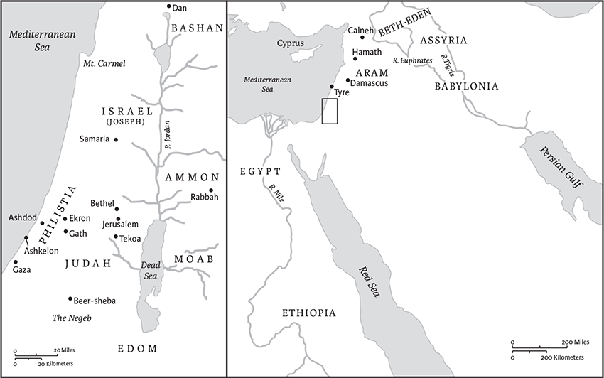

Amos
Name, Authorship, Date of Composition, and Historical Context
The book of Amos is a compilation of sayings attributed to the prophet Amos, who was active in the first half of the eighth century bce, during the long and peaceful reigns of Jeroboam II of Israel (788–747 bce; Am 1.1) and Uzziah of Judah (785–733 bce). In this period, Israel attained a height of territorial expansion and national prosperity never again reached. At the same time, this prosperity led to gross inequities between urban elite and the poor. Through manipulation of debt and credit, wealthy landowners amassed capital and estates at the expense of small farmers. The smallest debt served as the thin edge of a wedge that lenders could use to separate farmers from their patrimonial lands and to deprive them of personal liberty.
Into this scene stepped Amos, himself a farmer and herder from Tekoa, a small village in Judah, who was probably active as a prophet during the decade 760–750 bce. Amos denounced the society of the Northern Kingdom, Israel, in vivid language, bitterly describing the decadent opulence, immorality, and smug piety of the elite who “trample the head of the poor into the dust of the earth” (2.7). Amos's program, in contrast, called for “justice” and “righteousness” (5.7,24; 6.12), terms that connote social equality and concern for the disadvantaged (Isa 5.7; Mic 6.8). Amos also condemned impure religion, which for him and the other prophets meant worship of deities other than the Lord, the use of images (5.26) to represent God, and worship at illicit shrines (3.14; 4.4).
The narrative about Amos's encounter with Amaziah (7.1–7) and the superscription (1.1) yield the only portrait of the prophet. A native of the Southern Kingdom of Judah who raised livestock and tended fruit trees, Amos prophesied to and in the Northern Kingdom of Israel. At the royal sanctuary of Bethel (7.13), his bitter invective, voiced as a divine word (“I hate, I despise your festivals,” 5.21) no doubt scandalized pilgrims from Samaria, capital of the Northern Kingdom. His confrontation with the priest Amaziah remains one of the unforgettable scenes in biblical prophecy. Expelled from Bethel and commanded not to prophesy there again, Amos perhaps returned to Judah where he, or like-minded scribes, wrote down the essence of his public preaching in substantially its present form.
Although the reigns of Jeroboam II and Uzziah were relatively peaceful and prosperous in Israel and Judah, the region experienced calamitous upheaval shortly thereafter when Tiglath-pileser III assumed the throne in Assyria (745–727 bce). He began the period of Assyria's greatest expansion in the west, including conquering the smaller kingdoms of Syria-Palestine. His successors, Shalmaneser V (727–722) and Sargon II (722–705), invaded the Northern Kingdom and conquered Samaria in 722. Within a few decades of Amos's prophetic activity, the Northern Kingdom saw devastation and destruction which made his foreboding words all the more sobering.
Location in Canon
Amos's prophetic career was roughly contemporaneous with that of Hosea, though Amos probably preceded him. Chronologically, then, Amos inaugurated the era of classical prophecy. In the Septuagint the book of Amos directly follows Hosea. The traditional arrangement of the Book of the Twelve (see p. 971) in the Masoretic Text and in English translations, however, is based not solely on chronology but often on specific verbal similarities or catchwords that link the end of one book to the beginning of the next. Amos is linked to the preceding book of Joel by identical phrases (see Joel 3.16a and Am 1.2a) and to the following book of Obadiah by a similar subject (Edom in Am 9.12 and in Ob 1).
Structure and Contents
The book of Amos has three major parts: chs 1–2 are presented as a single speech, an ethical tour of the region from the divine perspective, which climaxes in judgment on Israel itself; chs 3–6 are the least unified section, a collection of short prophetic sayings indicting Israel for sin and injustice; chs 7–9 contain the visions of Amos, as well as the Amaziah narrative (7.10–17), and a final speech of comfort (9.11–15) addressed not to Israel but to Judah. The best approach for readers is to follow the sequence of the book itself. The book contains a variety of material. Some of Amos's sayings are presented as messenger speeches (“Thus says the Lord”), others as visions (“This is what the Lord showed me”), especially in chs 7–9. Amos, in a legal style of indictment followed by punishment (“therefore . . .”) announced judgments (e.g., 1.3–2.16), delivered funeral orations (e.g., 5.1–2) to lament the fate of Israel, and gave exhortations (e.g., 5.6). He rarely encouraged (but see 9.11–15 and the notes there). In addition to the preceding types of prophetic sayings, the book contains three hymnic fragments (4.13; 5.8–9; 9.5–6) and one narrative (7.10–17).
Interpretation
Against the background of Israelite tradition about “the day of the Lord,” occasions celebrated from the past and eagerly anticipated in the future when the Lord dramatically intervenes in human affairs, Amos announced that such a day was imminent. This time, however, the fortified palaces and temples of Israel would be leveled along with those of Israel's rival nations (1.3–2.3) when God executed the divine version of “justice and righteousness.” Israel's covenant with God (3.2) did not absolve it from this ethical standard, which Amos universalized (9.7–8). Though Amos affirmed the special quality of God's relationship with Israel, he stressed that it entailed a special ethical responsibility (3.1–2). Historically, the agent of this divine punishment would be the Assyrian army (not mentioned in Amos, but see Isa 10.5–11). The frequent references to exile in Amos (e.g., 3.11; 6.7; 7.17) reflect a grim threat: the Assyrian imperial practice of deporting and transplanting conquered peoples.
Amos described himself as “a herdsman, and a dresser of sycamore trees” (7.14). The latter tree is not the same as a North American “sycamore” (Platanus occidentalis), but a type of wild fig tree (Ficus sycomorus). These wild figs were gathered by poor people. The small fruit of this tree was inferior to that from the domesticated fig tree (Ficus carica). By “dressing” or gashing the small fruit of this tree, Amos and his cohorts hastened their ripening. This single, vivid detail about Amos's background in 7.14 speaks volumes about the prophet's ethics and harsh tone. It explains his solidarity with the poor (2.6–7; 5.11; 8.4) who literally “scratched out” a living in rural Judah and Ephraim, desperate for any harvest, however sparse and bitter. As noted, Amos rebuked far more often than he comforted. This arborist with his knife understood that pruning was required for revitalization and new growth. Amos lashed out at the elite's prosperity gained at the expense of the poor, upsetting their “baskets of summer fruit” (8.1–2).
The book of Amos begins and ends with references to an earthquake (1.1 and the images of shaking in 9.1–9). The exact year is unknown (760 has been proposed), but some archaeological evidence of a catastrophe exists. Did this earthquake, so severe that it was recalled centuries later (Zech 14.5), offer cosmic validation of Amos's preaching? One cannot know. Still, even today one can feel the aftershocks of Amos, the first in a brilliant succession of biblical prophets whose words, now preserved in written form, have left their indelible stamp on later thought about God and human history.
Gregory Mobley
1 The words of Amos, who was among the shepherds of Tekoa, which he saw concerning Israel in the days of King Uzziah of Judah and in the days of King Jeroboam son of Joash of Israel, two yearsa before the earthquake. 2And he said:
The Lord roars from Zion,
and utters his voice from Jerusalem;
the pastures of the shepherds wither,
and the top of Carmel dries up.
3Thus says the Lord:
For three transgressions of Damascus,
and for four, I will not revoke the punishment;a
because they have threshed Gilead
with threshing sledges of iron.
4So I will send a fire on the house of Hazael,
and it shall devour the strongholds of Ben-hadad.
5I will break the gate bars of Damascus,
and cut off the inhabitants from the Valley of Aven,
and the one who holds the scepter from Beth-eden;
and the people of Aram shall go into exile to Kir,
says the Lord.

Chs 1–2: Places mentioned in the oracles against foreign nations.
6Thus says the Lord:
For three transgressions of Gaza,
and for four, I will not revoke the punishment;a
because they carried into exile entire communities,
to hand them over to Edom.
7So I will send a fire on the wall of Gaza,
fire that shall devour its strongholds.
8I will cut off the inhabitants from Ashdod,
and the one who holds the scepter from Ashkelon;
I will turn my hand against Ekron,
and the remnant of the Philistines shall perish,
says the Lord God.
9Thus says the Lord:
For three transgressions of Tyre,
and for four, I will not revoke the punishment;a
because they delivered entire communities over to Edom,
and did not remember the covenant of kinship.
10So I will send a fire on the wall of Tyre,
fire that shall devour its strongholds.
11Thus says the Lord:
For three transgressions of Edom,
and for four, I will not revoke the punishment;a
because he pursued his brother with the sword
and cast off all pity;
he maintained his anger perpetually,b
and kept his wrathc forever.
12So I will send a fire on Teman,
and it shall devour the strongholds of Bozrah.
13Thus says the Lord:
For three transgressions of the Ammonites,
and for four, I will not revoke the punishment;a
because they have ripped open pregnant women in Gilead
in order to enlarge their territory.
14So I will kindle a fire against the wall of Rabbah,
fire that shall devour its strongholds,
with shouting on the day of battle,
with a storm on the day of the whirlwind;
15then their king shall go into exile,
he and his officials together,
says the Lord.
2
Thus says the Lord:
For three transgressions of Moab,
and for four, I will not revoke the punishment;a
because he burned to lime
the bones of the king of Edom.
2So I will send a fire on Moab,
and it shall devour the strongholds of Kerioth,
and Moab shall die amid uproar,
amid shouting and the sound of the trumpet;
3I will cut off the ruler from its midst,
and will kill all its officials with him,
says the Lord.
4Thus says the Lord:
For three transgressions of Judah,
and for four, I will not revoke the punishment;a
because they have rejected the law of the Lord,
and have not kept his statutes,
but they have been led astray by the same lies
after which their ancestors walked.
5So I will send a fire on Judah,
and it shall devour the strongholds of Jerusalem.
6Thus says the Lord:
For three transgressions of Israel,
and for four, I will not revoke the punishment;a
because they sell the righteous for silver,
and the needy for a pair of sandals—
7they who trample the head of the poor into the dust of the earth,
and push the afflicted out of the way;
father and son go in to the same girl,
so that my holy name is profaned;
8they lay themselves down beside every altar
on garments taken in pledge;
and in the house of their God they drink
wine bought with fines they imposed.
9Yet I destroyed the Amorite before them,
whose height was like the height of cedars,
and who was as strong as oaks;
I destroyed his fruit above,
and his roots beneath.
10Also I brought you up out of the land of Egypt,
and led you forty years in the wilderness,
to possess the land of the Amorite.
11And I raised up some of your children to be prophets
and some of your youths to be nazirites.b
Is it not indeed so, O people of Israel?
says the Lord.
12But you made the naziritesb drink wine,
and commanded the prophets,
saying, “You shall not prophesy.”
13So, I will press you down in your place,
just as a cart presses down
when it is full of sheaves.a
14Flight shall perish from the swift,
and the strong shall not retain their strength,
nor shall the mighty save their lives;
15those who handle the bow shall not stand,
and those who are swift of foot shall not save themselves,
nor shall those who ride horses save their lives;
16and those who are stout of heart among the mighty
shall flee away naked in that day,
says the Lord.
3 Hear this word that the Lord has spoken against you, O people of Israel, against the whole family that I brought up out of the land of Egypt:
2You only have I known
of all the families of the earth;
therefore I will punish you
for all your iniquities.
3Do two walk together
unless they have made an appointment?
4Does a lion roar in the forest,
when it has no prey?
Does a young lion cry out from its den,
if it has caught nothing?
5Does a bird fall into a snare on the earth,
when there is no trap for it?
Does a snare spring up from the ground,
when it has taken nothing?
6Is a trumpet blown in a city,
and the people are not afraid?
Does disaster befall a city,
unless the Lord has done it?
7Surely the Lord God does nothing,
without revealing his secret
to his servants the prophets.
8The lion has roared;
who will not fear?
The Lord God has spoken;
who can but prophesy?
9Proclaim to the strongholds in Ashdod,
and to the strongholds in the land of Egypt,
and say, “Assemble yourselves on Mountb Samaria,
and see what great tumults are within it,
and what oppressions are in its midst.”
10They do not know how to do right, says the Lord,
those who store up violence and robbery in their strongholds.
11Therefore thus says the Lord God:
An adversary shall surround the land,
and strip you of your defense;
and your strongholds shall be plundered.
12Thus says the Lord: As the shepherd rescues from the mouth of the lion two legs, or a piece of an ear, so shall the people of Israel who live in Samaria be rescued, with the corner of a couch and parta of a bed.
13Hear, and testify against the house of Jacob,
says the Lord God, the God of hosts:
14On the day I punish Israel for its transgressions,
I will punish the altars of Bethel,
and the horns of the altar shall be cut off
and fall to the ground.
15I will tear down the winter house as well as the summer house;
and the houses of ivory shall perish,
and the great housesb shall come to an end,
says the Lord.
4
Hear this word, you cows of Bashan
who are on Mount Samaria,
who oppress the poor, who crush the needy,
who say to their husbands, “Bring something to drink!”
2The Lord God has sworn by his holiness:
The time is surely coming upon you,
when they shall take you away with hooks,
even the last of you with fishhooks.
3Through breaches in the wall you shall leave,
each one straight ahead;
and you shall be flung out into Harmon,a
says the Lord.
4Come to Bethel—and transgress;
to Gilgal—and multiply transgression;
bring your sacrifices every morning,
your tithes every three days;
5bring a thank offering of leavened bread,
and proclaim freewill offerings, publish them;
for so you love to do, O people of Israel!
says the Lord God.
6I gave you cleanness of teeth in all your cities,
and lack of bread in all your places,
yet you did not return to me,
says the Lord.
7And I also withheld the rain from you
when there were still three months to the harvest;
I would send rain on one city,
and send no rain on another city;
one field would be rained upon,
and the field on which it did not rain withered;
8so two or three towns wandered to one town
to drink water, and were not satisfied;
yet you did not return to me,
says the Lord.
9I struck you with blight and mildew;
I laid wastea your gardens and your vineyards;
the locust devoured your fig trees and your olive trees;
yet you did not return to me,
says the Lord.
10I sent among you a pestilence after the manner of Egypt;
I killed your young men with the sword;
I carried away your horses;b
and I made the stench of your camp go up into your nostrils;
yet you did not return to me,
says the Lord.
11I overthrew some of you,
as when God overthrew Sodom and Gomorrah,
and you were like a brand snatched from the fire;
yet you did not return to me,
says the Lord.
12Therefore thus I will do to you, O Israel;
because I will do this to you,
prepare to meet your God, O Israel!
13For lo, the one who forms the mountains, creates the wind,
reveals his thoughts to mortals,
makes the morning darkness,
and treads on the heights of the earth—
the Lord, the God of hosts, is his name!
5 Hear this word that I take up over you in lamentation, O house of Israel:
3For thus says the Lord God:
The city that marched out a thousand
shall have a hundred left,
and that which marched out a hundred
shall have ten left.c
4For thus says the Lord to the house of Israel:
Seek me and live;
5but do not seek Bethel,
and do not enter into Gilgal
or cross over to Beer-sheba;
for Gilgal shall surely go into exile,
and Bethel shall come to nothing.
6Seek the Lord and live,
or he will break out against the house of Joseph like fire,
and it will devour Bethel, with no one to quench it.
7Ah, you that turn justice to wormwood,
and bring righteousness to the ground!
8The one who made the Pleiades and Orion,
and turns deep darkness into the morning,
and darkens the day into night,
who calls for the waters of the sea,
and pours them out on the surface of the earth,
the Lord is his name,
9who makes destruction flash out against the strong,
so that destruction comes upon the fortress.
10They hate the one who reproves in the gate,
and they abhor the one who speaks the truth.
11Therefore because you trample on the poor
and take from them levies of grain,
you have built houses of hewn stone,
but you shall not live in them;
you have planted pleasant vineyards,
but you shall not drink their wine.
12For I know how many are your transgressions,
and how great are your sins—
you who afflict the righteous, who take a bribe,
and push aside the needy in the gate.
13Therefore the prudent will keep silent in such a time;
for it is an evil time.
14Seek good and not evil,
that you may live;
and so the Lord, the God of hosts, will be with you,
just as you have said.
15Hate evil and love good,
and establish justice in the gate;
it may be that the Lord, the God of hosts,
will be gracious to the remnant of Joseph.
16Therefore thus says the Lord, the God of hosts, the Lord:
In all the squares there shall be wailing;
and in all the streets they shall say, “Alas! alas!”
They shall call the farmers to mourning,
and those skilled in lamentation, to wailing;
17in all the vineyards there shall be wailing,
for I will pass through the midst of you,
says the Lord.
18Alas for you who desire the day of the Lord!
Why do you want the day of the Lord?
It is darkness, not light;
19as if someone fled from a lion,
and was met by a bear;
or went into the house and rested a hand against the wall,
and was bitten by a snake.
20Is not the day of the Lord darkness, not light,
and gloom with no brightness in it?
21I hate, I despise your festivals,
and I take no delight in your solemn assemblies.
22Even though you offer me your burnt offerings and grain offerings,
I will not accept them;
and the offerings of well-being of your fatted animals
I will not look upon.
23Take away from me the noise of your songs;
I will not listen to the melody of your harps.
24But let justice roll down like waters,
and righteousness like an ever-flowing stream.
25Did you bring to me sacrifices and offerings the forty years in the wilderness, O house of Israel? 26You shall take up Sakkuth your king, and Kaiwan your star-god, your images,a which you made for yourselves; 27therefore I will take you into exile beyond Damascus, says the Lord, whose name is the God of hosts.
6
Alas for those who are at ease in Zion,
and for those who feel secure on Mount Samaria,
the notables of the first of the nations,
to whom the house of Israel resorts!
2Cross over to Calneh, and see;
from there go to Hamath the great;
then go down to Gath of the Philistines.
Are you betterb than these kingdoms?
Or is yourc territory greater than theird territory,
3O you that put far away the evil day,
and bring near a reign of violence?
4Alas for those who lie on beds of ivory,
and lounge on their couches,
and eat lambs from the flock,
and calves from the stall;
5who sing idle songs to the sound of the harp,
and like David improvise on instruments of music;
6who drink wine from bowls,
and anoint themselves with the finest oils,
but are not grieved over the ruin of Joseph!
7Therefore they shall now be the first to go into exile,
and the revelry of the loungers shall pass away.
8The Lord God has sworn by himself
(says the Lord, the God of hosts):
I abhor the pride of Jacob
and hate his strongholds;
and I will deliver up the city and all that is in it.
9If ten people remain in one house, they shall die. 10And if a relative, one who burns the dead,a shall take up the body to bring it out of the house, and shall say to someone in the innermost parts of the house, “Is anyone else with you?” the answer will come, “No.” Then the relativeb shall say, “Hush! We must not mention the name of the Lord.”
11See, the Lord commands,
and the great house shall be shattered to bits,
and the little house to pieces.
12Do horses run on rocks?
Does one plow the sea with oxen?c
But you have turned justice into poison
and the fruit of righteousness into wormwood—
13you who rejoice in Lo-debar,d
who say, “Have we not by our own strength
taken Karnaime for ourselves?”
14Indeed, I am raising up against you a nation,
O house of Israel, says the Lord, the God of hosts,
and they shall oppress you from Lebohamath
to the Wadi Arabah.
7 This is what the Lord God showed me: he was forming locusts at the time the latter growth began to sprout (it was the latter growth after the king's mowings). 2When they had finished eating the grass of the land, I said,
“O Lord God, forgive, I beg you!
How can Jacob stand?
He is so small!”
3The Lord relented concerning this;
“It shall not be,” said the Lord.
4This is what the Lord God showed me: the Lord God was calling for a shower of fire,a and it devoured the great deep and was eating up the land. 5Then I said,
“O Lord God, cease, I beg you!
How can Jacob stand?
He is so small!”
6The Lord relented concerning this;
“This also shall not be,” said the Lord God.
7This is what he showed me: the Lord was standing beside a wall built with a plumb line, with a plumb line in his hand. 8And the Lord said to me, “Amos, what do you see?” And I said, “A plumb line.” Then the Lord said,
“See, I am setting a plumb line
in the midst of my people Israel;
I will never again pass them by;
9the high places of Isaac shall be made desolate,
and the sanctuaries of Israel shall be laid waste,
and I will rise against the house of Jeroboam with the sword.”
10Then Amaziah, the priest of Bethel, sent to King Jeroboam of Israel, saying, “Amos has conspired against you in the very center of the house of Israel; the land is not able to bear all his words. 11For thus Amos has said,
‘Jeroboam shall die by the sword,
and Israel must go into exile
away from his land.’”
12And Amaziah said to Amos, “O seer, go, flee away to the land of Judah, earn your bread there, and prophesy there; 13but never again prophesy at Bethel, for it is the king's sanctuary, and it is a temple of the kingdom.”
14Then Amos answered Amaziah, “I amb no prophet, nor a prophet's son; but I amb a herdsman, and a dresser of sycamore trees, 15and the Lord took me from following the flock, and the Lord said to me, ‘Go, prophesy to my people Israel.’
16“Now therefore hear the word of the Lord.
You say, ‘Do not prophesy against Israel,
and do not preach against the house of Isaac.’
17Therefore thus says the Lord:
‘Your wife shall become a prostitute in the city,
and your sons and your daughters shall fall by the sword,
and your land shall be parceled out by line;
you yourself shall die in an unclean land,
and Israel shall surely go into exile away from its land.’”
8 This is what the Lord God showed me—a basket of summer fruit. a 2He said, “Amos, what do you see?” And I said, “A basket of summer fruit.”a Then the Lord said to me,
“The endb has come upon my people Israel;
I will never again pass them by.
3The songs of the templec shall become wailings in that day,”
says the Lord God;
“the dead bodies shall be many,
cast out in every place. Be silent!”
4Hear this, you that trample on the needy,
and bring to ruin the poor of the land,
5saying, “When will the new moon be over
so that we may sell grain;
and the sabbath,
so that we may offer wheat for sale?
We will make the ephah small and the shekel great,
and practice deceit with false balances,
6buying the poor for silver
and the needy for a pair of sandals,
and selling the sweepings of the wheat.”
7The Lord has sworn by the pride of Jacob:
Surely I will never forget any of their deeds.
8Shall not the land tremble on this account,
and everyone mourn who lives in it, and all of it rise like the Nile,
and be tossed about and sink again, like the Nile of Egypt?
9On that day, says the Lord God,
I will make the sun go down at noon,
and darken the earth in broad daylight.
10I will turn your feasts into mourning,
and all your songs into lamentation;
I will bring sackcloth on all loins,
and baldness on every head;
I will make it like the mourning for an only son,
and the end of it like a bitter day.
11The time is surely coming, says the Lord God,
when I will send a famine on the land;
not a famine of bread, or a thirst for water,
but of hearing the words of the Lord.
12They shall wander from sea to sea,
and from north to east;
they shall run to and fro, seeking the word of the Lord,
but they shall not find it.
9
I saw the Lord standing besidea the altar, and he said:
Strike the capitals until the thresholds shake,
and shatter them on the heads of all the people;b
and those who are left I will kill with the sword;
not one of them shall flee away,
not one of them shall escape.
2Though they dig into Sheol,
from there shall my hand take them;
though they climb up to heaven,
from there I will bring them down.
3Though they hide themselves on the top of Carmel,
from there I will search out and take them;
and though they hide from my sight at the bottom of the sea,
there I will command the sea-serpent, and it shall bite them.
4And though they go into captivity in
front of their enemies,
there I will command the sword, and it shall kill them;
and I will fix my eyes on them
for harm and not for good.
5The Lord, God of hosts,
he who touches the earth and it melts,
and all who live in it mourn,
and all of it rises like the Nile,
and sinks again, like the Nile of Egypt;
6who builds his upper chambers in the heavens,
and founds his vault upon the earth;
who calls for the waters of the sea,
and pours them out upon the surface of the earth—
the Lord is his name.
7Are you not like the Ethiopiansa to me,
O people of Israel? says the Lord.
Did I not bring Israel up from the land of Egypt,
and the Philistines from Caphtor and the Arameans from Kir?
8The eyes of the Lord God are upon the sinful kingdom,
and I will destroy it from the face of the earth
—except that I will not utterly destroy the house of Jacob,
says the Lord.
9For lo, I will command,
and shake the house of Israel among all the nations
as one shakes with a sieve,
but no pebble shall fall to the ground.
10All the sinners of my people shall die by the sword,
who say, “Evil shall not overtake or meet us.”
11On that day I will raise up
the booth of David that is fallen,
and repair itsb breaches,
and raise up itsc ruins,
and rebuild it as in the days of old;
12in order that they may possess the remnant of Edom
and all the nations who are called by my name,
says the Lord who does this.
13The time is surely coming, says the Lord,
when the one who plows shall overtake the one who reaps,
and the treader of grapes the one who sows the seed;
the mountains shall drip sweet wine,
and all the hills shall flow with it.
14I will restore the fortunes of my people Israel,
and they shall rebuild the ruined cities and inhabit them;
they shall plant vineyards and drink their wine,
and they shall make gardens and eat their fruit.
15I will plant them upon their land,
and they shall never again be plucked up
out of the land that I have given them,
says the Lord your God.